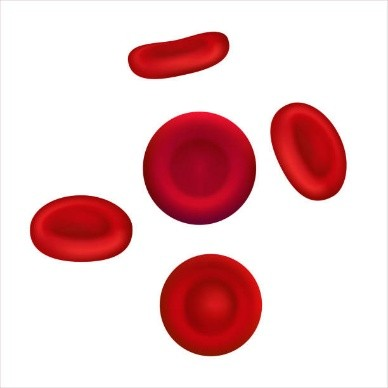

Eritrocitos
Transportan oxígeno con vida media de 120 días.
Haz click en cualquier imagen para ampliar y leer la descripción rápida.
Transportan oxígeno con vida media de 120 días.
Se originan en médula osea y tienen núcleo.
Primera línea contra bacterias.
Combaten parásitos y modulan alergias.
Libera histamina en reacciones alérgicas.
Clave en la inmunidad adaptativa.
Se convierte en macrófago en tejidos.
Fragmentos que inician la coagulación.